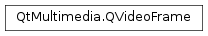

QVideoFrame¶
Synopsis¶
Functions¶
- def
__eq__(other) - def
__ne__(other) - def
availableMetaData() - def
bits() - def
bytesPerLine() - def
bytesPerLine(plane) - def
endTime() - def
fieldType() - def
handle() - def
handleType() - def
height() - def
isMapped() - def
isReadable() - def
isValid() - def
isWritable() - def
map(mode) - def
mapMode() - def
mappedBytes() - def
metaData(key) - def
pixelFormat() - def
planeCount() - def
setEndTime(time) - def
setFieldType(arg__1) - def
setMetaData(key, value) - def
setStartTime(time) - def
size() - def
startTime() - def
unmap() - def
width()
Static functions¶
- def
imageFormatFromPixelFormat(format) - def
pixelFormatFromImageFormat(format)
Detailed Description¶
The
PySide2.QtMultimedia.QVideoFrameclass represents a frame of video data.A
PySide2.QtMultimedia.QVideoFrameencapsulates the pixel data of a video frame, and information about the frame.Video frames can come from several places - decoded
media, acamera, or generated programmatically. The way pixels are described in these frames can vary greatly, and some pixel formats offer greater compression opportunities at the expense of ease of use.The pixel contents of a video frame can be mapped to memory using the
PySide2.QtMultimedia.QVideoFrame.map()function. While mapped, the video data can accessed using thePySide2.QtMultimedia.QVideoFrame.bits()function, which returns a pointer to a buffer. The total size of this buffer is given by thePySide2.QtMultimedia.QVideoFrame.mappedBytes()function, and the size of each line is given byPySide2.QtMultimedia.QVideoFrame.bytesPerLine(). The return value of thePySide2.QtMultimedia.QVideoFrame.handle()function may also be used to access frame data using the internal buffer’s native APIs (for example - an OpenGL texture handle).A video frame can also have timestamp information associated with it. These timestamps can be used by an implementation of
PySide2.QtMultimedia.QAbstractVideoSurfaceto determine when to start and stop displaying the frame, but not all surfaces might respect this setting.The video pixel data in a
PySide2.QtMultimedia.QVideoFrameis encapsulated in aPySide2.QtMultimedia.QAbstractVideoBuffer. APySide2.QtMultimedia.QVideoFramemay be constructed from any buffer type by subclassing thePySide2.QtMultimedia.QAbstractVideoBufferclass.Note
Since video frames can be expensive to copy,
PySide2.QtMultimedia.QVideoFrameis explicitly shared, so any change made to a video frame will also apply to any copies.
-
class
PySide2.QtMultimedia.QVideoFrame¶ -
class
PySide2.QtMultimedia.QVideoFrame(buffer, size, format) -
class
PySide2.QtMultimedia.QVideoFrame(image) -
class
PySide2.QtMultimedia.QVideoFrame(other) -
class
PySide2.QtMultimedia.QVideoFrame(bytes, size, bytesPerLine, format) Parameters: - size –
PySide2.QtCore.QSize - format –
PySide2.QtMultimedia.QVideoFrame.PixelFormat - bytes –
PySide2.QtCore.int - other –
PySide2.QtMultimedia.QVideoFrame - bytesPerLine –
PySide2.QtCore.int - buffer –
PySide2.QtMultimedia.QAbstractVideoBuffer - image –
PySide2.QtGui.QImage
Constructs a null video frame.
Constructs a video frame from a
bufferwith the given pixelformatandsizein pixels.Note
This doesn’t increment the reference count of the video buffer.
Constructs a video frame from an
image.Note
This will construct an invalid video frame if there is no frame type equivalent to the image format.
Constructs a shallow copy of
other. SincePySide2.QtMultimedia.QVideoFrameis explicitly shared, these two instances will reflect the same frame.Constructs a video frame of the given pixel
formatandsizein pixels.The
bytesPerLine(stride) is the length of each scan line in bytes, andbytesis the total number of bytes that must be allocated for the frame.- size –
-
PySide2.QtMultimedia.QVideoFrame.FieldType¶ Specifies the field an interlaced video frame belongs to.
Constant Description QVideoFrame.ProgressiveFrame The frame is not interlaced. QVideoFrame.TopField The frame contains a top field. QVideoFrame.BottomField The frame contains a bottom field. QVideoFrame.InterlacedFrame The frame contains a merged top and bottom field.
-
PySide2.QtMultimedia.QVideoFrame.PixelFormat¶ Enumerates video data types.
Constant Description QVideoFrame.Format_Invalid The frame is invalid. QVideoFrame.Format_ARGB32 The frame is stored using a 32-bit ARGB format (0xAARRGGBB). This is equivalent to QImage.Format_ARGB32.QVideoFrame.Format_ARGB32_Premultiplied The frame stored using a premultiplied 32-bit ARGB format (0xAARRGGBB). This is equivalent to QImage.Format_ARGB32_Premultiplied.QVideoFrame.Format_RGB32 The frame stored using a 32-bit RGB format (0xffRRGGBB). This is equivalent to QImage.Format_RGB32QVideoFrame.Format_RGB24 The frame is stored using a 24-bit RGB format (8-8-8). This is equivalent to QImage.Format_RGB888QVideoFrame.Format_RGB565 The frame is stored using a 16-bit RGB format (5-6-5). This is equivalent to QImage.Format_RGB16.QVideoFrame.Format_RGB555 The frame is stored using a 16-bit RGB format (5-5-5). This is equivalent to QImage.Format_RGB555.QVideoFrame.Format_ARGB8565_Premultiplied The frame is stored using a 24-bit premultiplied ARGB format (8-5-6-5). QVideoFrame.Format_BGRA32 The frame is stored using a 32-bit BGRA format (0xBBGGRRAA). QVideoFrame.Format_BGRA32_Premultiplied The frame is stored using a premultiplied 32bit BGRA format. QVideoFrame.Format_BGR32 The frame is stored using a 32-bit BGR format (0xBBGGRRff). QVideoFrame.Format_BGR24 The frame is stored using a 24-bit BGR format (0xBBGGRR). QVideoFrame.Format_BGR565 The frame is stored using a 16-bit BGR format (5-6-5). QVideoFrame.Format_BGR555 The frame is stored using a 16-bit BGR format (5-5-5). QVideoFrame.Format_BGRA5658_Premultiplied The frame is stored using a 24-bit premultiplied BGRA format (5-6-5-8). QVideoFrame.Format_AYUV444 The frame is stored using a packed 32-bit AYUV format (0xAAYYUUVV). QVideoFrame.Format_AYUV444_Premultiplied The frame is stored using a packed premultiplied 32-bit AYUV format (0xAAYYUUVV). QVideoFrame.Format_YUV444 The frame is stored using a 24-bit packed YUV format (8-8-8). QVideoFrame.Format_YUV420P The frame is stored using an 8-bit per component planar YUV format with the U and V planes horizontally and vertically sub-sampled, i.e. the height and width of the U and V planes are half that of the Y plane. QVideoFrame.Format_YV12 The frame is stored using an 8-bit per component planar YVU format with the V and U planes horizontally and vertically sub-sampled, i.e. the height and width of the V and U planes are half that of the Y plane. QVideoFrame.Format_UYVY The frame is stored using an 8-bit per component packed YUV format with the U and V planes horizontally sub-sampled (U-Y-V-Y), i.e. two horizontally adjacent pixels are stored as a 32-bit macropixel which has a Y value for each pixel and common U and V values. QVideoFrame.Format_YUYV The frame is stored using an 8-bit per component packed YUV format with the U and V planes horizontally sub-sampled (Y-U-Y-V), i.e. two horizontally adjacent pixels are stored as a 32-bit macropixel which has a Y value for each pixel and common U and V values. QVideoFrame.Format_NV12 The frame is stored using an 8-bit per component semi-planar YUV format with a Y plane (Y) followed by a horizontally and vertically sub-sampled, packed UV plane (U-V). QVideoFrame.Format_NV21 The frame is stored using an 8-bit per component semi-planar YUV format with a Y plane (Y) followed by a horizontally and vertically sub-sampled, packed VU plane (V-U). QVideoFrame.Format_IMC1 The frame is stored using an 8-bit per component planar YUV format with the U and V planes horizontally and vertically sub-sampled. This is similar to the type, except that the bytes per line of the U and V planes are padded out to the same stride as the Y plane. QVideoFrame.Format_IMC2 The frame is stored using an 8-bit per component planar YUV format with the U and V planes horizontally and vertically sub-sampled. This is similar to the type, except that the lines of the U and V planes are interleaved, i.e. each line of U data is followed by a line of V data creating a single line of the same stride as the Y data. QVideoFrame.Format_IMC3 The frame is stored using an 8-bit per component planar YVU format with the V and U planes horizontally and vertically sub-sampled. This is similar to the type, except that the bytes per line of the V and U planes are padded out to the same stride as the Y plane. QVideoFrame.Format_IMC4 The frame is stored using an 8-bit per component planar YVU format with the V and U planes horizontally and vertically sub-sampled. This is similar to the type, except that the lines of the V and U planes are interleaved, i.e. each line of V data is followed by a line of U data creating a single line of the same stride as the Y data. QVideoFrame.Format_Y8 The frame is stored using an 8-bit greyscale format. QVideoFrame.Format_Y16 The frame is stored using a 16-bit linear greyscale format. Little endian. QVideoFrame.Format_Jpeg The frame is stored in compressed Jpeg format. QVideoFrame.Format_CameraRaw The frame is stored using a device specific camera raw format. QVideoFrame.Format_AdobeDng The frame is stored using raw Adobe Digital Negative (DNG) format. QVideoFrame.Format_User Start value for user defined pixel formats.
-
PySide2.QtMultimedia.QVideoFrame.availableMetaData()¶ Return type: PySide2.QtCore.QVariantMapReturns any extra metadata associated with this frame.
-
PySide2.QtMultimedia.QVideoFrame.bits()¶ Return type: PySide2.QtCore.ucharReturns a pointer to the start of the frame data buffer.
This value is only valid while the frame data is
mapped.If the buffer was not mapped with read access, the contents of this buffer will initially be uninitialized.
-
PySide2.QtMultimedia.QVideoFrame.bytesPerLine(plane)¶ Parameters: plane – PySide2.QtCore.intReturn type: PySide2.QtCore.intReturns the number of bytes in a scan line of a
plane.This value is only valid while the frame data is
mapped.
-
PySide2.QtMultimedia.QVideoFrame.bytesPerLine() Return type: PySide2.QtCore.intReturns the number of bytes in a scan line.
Note
For planar formats this is the bytes per line of the first plane only. The bytes per line of subsequent planes should be calculated as per the frame
pixel format.This value is only valid while the frame data is
mapped.
-
PySide2.QtMultimedia.QVideoFrame.endTime()¶ Return type: PySide2.QtCore.qint64Returns the presentation time (in microseconds) when a frame should stop being displayed.
An invalid time is represented as -1.
-
PySide2.QtMultimedia.QVideoFrame.fieldType()¶ Return type: PySide2.QtMultimedia.QVideoFrame.FieldTypeReturns the field an interlaced video frame belongs to.
If the video is not interlaced this will return WholeFrame.
-
PySide2.QtMultimedia.QVideoFrame.handle()¶ Return type: object Returns a type specific handle to a video frame’s buffer.
For an OpenGL texture this would be the texture ID.
See also
-
PySide2.QtMultimedia.QVideoFrame.handleType()¶ Return type: PySide2.QtMultimedia.QAbstractVideoBuffer.HandleTypeReturns the type of a video frame’s handle.
-
PySide2.QtMultimedia.QVideoFrame.height()¶ Return type: PySide2.QtCore.intReturns the height of a video frame.
-
static
PySide2.QtMultimedia.QVideoFrame.imageFormatFromPixelFormat(format)¶ Parameters: format – PySide2.QtMultimedia.QVideoFrame.PixelFormatReturn type: PySide2.QtGui.QImage.FormatReturns an image format equivalent to a video frame pixel
format. If there is no equivalent formatQImage.Format_Invalidis returned instead.Note
In general
PySide2.QtGui.QImagedoes not handle YUV formats.
-
PySide2.QtMultimedia.QVideoFrame.isMapped()¶ Return type: PySide2.QtCore.boolIdentifies if a video frame’s contents are currently mapped to system memory.
This is a convenience function which checks that the
QAbstractVideoBuffer.MapModeof the frame is not equal toQAbstractVideoBuffer.NotMapped.Returns true if the contents of the video frame are mapped to system memory, and false otherwise.
See also
PySide2.QtMultimedia.QVideoFrame.mapMode()QAbstractVideoBuffer.MapMode
-
PySide2.QtMultimedia.QVideoFrame.isReadable()¶ Return type: PySide2.QtCore.boolIdentifies if the mapped contents of a video frame were read from the frame when it was mapped.
This is a convenience function which checks if the
QAbstractVideoBuffer.MapModecontains theQAbstractVideoBuffer.WriteOnlyflag.Returns true if the contents of the mapped memory were read from the video frame, and false otherwise.
See also
PySide2.QtMultimedia.QVideoFrame.mapMode()QAbstractVideoBuffer.MapMode
-
PySide2.QtMultimedia.QVideoFrame.isValid()¶ Return type: PySide2.QtCore.boolIdentifies whether a video frame is valid.
An invalid frame has no video buffer associated with it.
Returns true if the frame is valid, and false if it is not.
-
PySide2.QtMultimedia.QVideoFrame.isWritable()¶ Return type: PySide2.QtCore.boolIdentifies if the mapped contents of a video frame will be persisted when the frame is unmapped.
This is a convenience function which checks if the
QAbstractVideoBuffer.MapModecontains theQAbstractVideoBuffer.WriteOnlyflag.Returns true if the video frame will be updated when unmapped, and false otherwise.
Note
The result of altering the data of a frame that is mapped in read-only mode is undefined. Depending on the buffer implementation the changes may be persisted, or worse alter a shared buffer.
See also
PySide2.QtMultimedia.QVideoFrame.mapMode()QAbstractVideoBuffer.MapMode
-
PySide2.QtMultimedia.QVideoFrame.map(mode)¶ Parameters: mode – PySide2.QtMultimedia.QAbstractVideoBuffer.MapModeReturn type: PySide2.QtCore.boolMaps the contents of a video frame to system (CPU addressable) memory.
In some cases the video frame data might be stored in video memory or otherwise inaccessible memory, so it is necessary to map a frame before accessing the pixel data. This may involve copying the contents around, so avoid mapping and unmapping unless required.
The map
modeindicates whether the contents of the mapped memory should be read from and/or written to the frame. If the map mode includes theQAbstractVideoBuffer::ReadOnlyflag the mapped memory will be populated with the content of the video frame when initially mapped. If the map mode includes theQAbstractVideoBuffer::WriteOnlyflag the content of the possibly modified mapped memory will be written back to the frame when unmapped.While mapped the contents of a video frame can be accessed directly through the pointer returned by the
PySide2.QtMultimedia.QVideoFrame.bits()function.When access to the data is no longer needed, be sure to call the
PySide2.QtMultimedia.QVideoFrame.unmap()function to release the mapped memory and possibly update the video frame contents.If the video frame has been mapped in read only mode, it is permissible to map it multiple times in read only mode (and unmap it a corresponding number of times). In all other cases it is necessary to unmap the frame first before mapping a second time.
Note
Writing to memory that is mapped as read-only is undefined, and may result in changes to shared data or crashes.
Returns true if the frame was mapped to memory in the given
modeand false otherwise.
-
PySide2.QtMultimedia.QVideoFrame.mapMode()¶ Return type: PySide2.QtMultimedia.QAbstractVideoBuffer.MapModeReturns the mode a video frame was mapped to system memory in.
See also
PySide2.QtMultimedia.QVideoFrame.map()QAbstractVideoBuffer.MapMode
-
PySide2.QtMultimedia.QVideoFrame.mappedBytes()¶ Return type: PySide2.QtCore.intReturns the number of bytes occupied by the mapped frame data.
This value is only valid while the frame data is
mapped.
-
PySide2.QtMultimedia.QVideoFrame.metaData(key)¶ Parameters: key – unicode Return type: object Returns any metadata for this frame for the given
key.This might include frame specific information from a camera, or subtitles from a decoded video stream.
See the documentation for the relevant video frame producer for further information about available metadata.
-
PySide2.QtMultimedia.QVideoFrame.__ne__(other)¶ Parameters: other – PySide2.QtMultimedia.QVideoFrameReturn type: PySide2.QtCore.boolReturns
trueif thisPySide2.QtMultimedia.QVideoFrameandotherdo not reflect the same frame.
-
PySide2.QtMultimedia.QVideoFrame.__eq__(other)¶ Parameters: other – PySide2.QtMultimedia.QVideoFrameReturn type: PySide2.QtCore.boolReturns
trueif thisPySide2.QtMultimedia.QVideoFrameandotherreflect the same frame.
-
PySide2.QtMultimedia.QVideoFrame.pixelFormat()¶ Return type: PySide2.QtMultimedia.QVideoFrame.PixelFormatReturns the color format of a video frame.
-
static
PySide2.QtMultimedia.QVideoFrame.pixelFormatFromImageFormat(format)¶ Parameters: format – PySide2.QtGui.QImage.FormatReturn type: PySide2.QtMultimedia.QVideoFrame.PixelFormatReturns a video pixel format equivalent to an image
format. If there is no equivalent format QVideoFrame::InvalidType is returned instead.Note
In general
PySide2.QtGui.QImagedoes not handle YUV formats.
-
PySide2.QtMultimedia.QVideoFrame.planeCount()¶ Return type: PySide2.QtCore.intReturns the number of planes in the video frame.
This value is only valid while the frame data is
mapped.
-
PySide2.QtMultimedia.QVideoFrame.setEndTime(time)¶ Parameters: time – PySide2.QtCore.qint64Sets the presentation
time(in microseconds) when a frame should stop being displayed.An invalid time is represented as -1.
-
PySide2.QtMultimedia.QVideoFrame.setFieldType(arg__1)¶ Parameters: arg__1 – PySide2.QtMultimedia.QVideoFrame.FieldTypeSets the
fieldan interlaced video frame belongs to.
-
PySide2.QtMultimedia.QVideoFrame.setMetaData(key, value)¶ Parameters: - key – unicode
- value – object
Sets the metadata for the given
keytovalue.If
valueis a null variant, any metadata for this key will be removed.The producer of the video frame might use this to associate certain data with this frame, or for an intermediate processor to add information for a consumer of this frame.
-
PySide2.QtMultimedia.QVideoFrame.setStartTime(time)¶ Parameters: time – PySide2.QtCore.qint64Sets the presentation
time(in microseconds) when the frame should initially be displayed.An invalid time is represented as -1.
-
PySide2.QtMultimedia.QVideoFrame.size()¶ Return type: PySide2.QtCore.QSizeReturns the dimensions of a video frame.
-
PySide2.QtMultimedia.QVideoFrame.startTime()¶ Return type: PySide2.QtCore.qint64Returns the presentation time (in microseconds) when the frame should be displayed.
An invalid time is represented as -1.
-
PySide2.QtMultimedia.QVideoFrame.unmap()¶ Releases the memory mapped by the
PySide2.QtMultimedia.QVideoFrame.map()function.If the
QAbstractVideoBuffer.MapModeincluded theQAbstractVideoBuffer.WriteOnlyflag this will persist the current content of the mapped memory to the video frame.should not be called if
PySide2.QtMultimedia.QVideoFrame.map()function failed.
-
PySide2.QtMultimedia.QVideoFrame.width()¶ Return type: PySide2.QtCore.intReturns the width of a video frame.
© 2018 The Qt Company Ltd. Documentation contributions included herein are the copyrights of their respective owners. The documentation provided herein is licensed under the terms of the GNU Free Documentation License version 1.3 as published by the Free Software Foundation. Qt and respective logos are trademarks of The Qt Company Ltd. in Finland and/or other countries worldwide. All other trademarks are property of their respective owners.